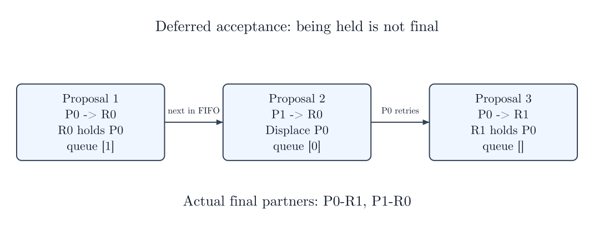
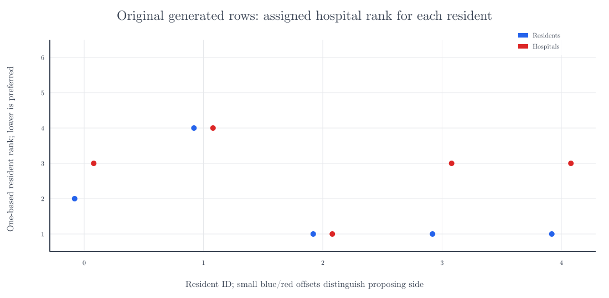
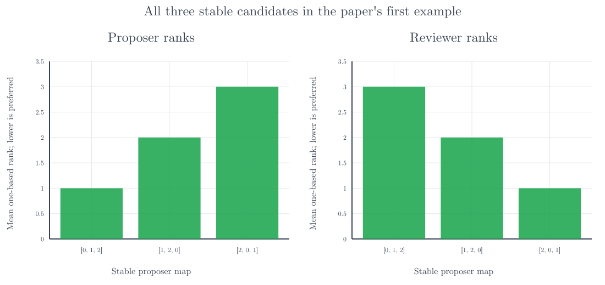
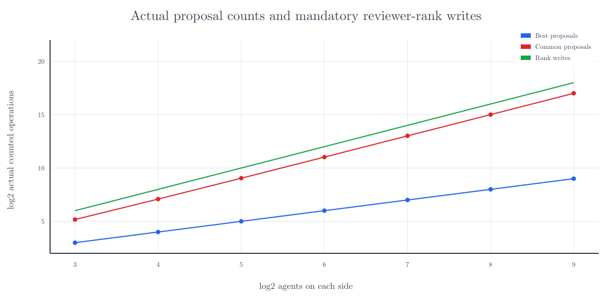
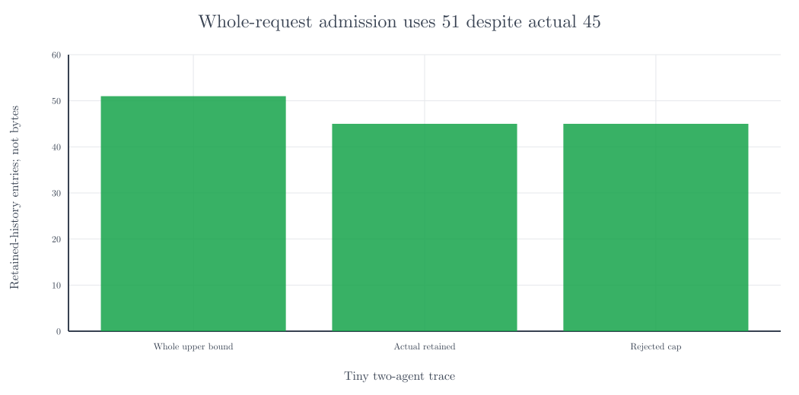

Gale–Shapley: actual deferred acceptance and safe stability checks
Abstract
Given equal groups with strict complete rankings, find a one-to-one matching with no pair that mutually prefers to abandon its assigned partners. Deferred acceptance solves this by keeping offers tentative. A two-agent example shows an actual displacement and the free-proposer queue. The original five-agent program is then rerun through native fixtures, orientation helpers and rank summaries. Exhaustive small examples separate proposer-optimal stability from a claim that everyone is best off. Actual proposal counts, structural matching validation and owned-history admission keep the theorem, the implementation and resource limits distinct.
One tentative offer is displaced
Both proposers rank reviewers 0 then 1. Reviewer 0 ranks proposer 1 above 0; reviewer 1 ranks proposer 0 above 1. The FIFO starts [0,1]. Proposer 0 is initially held by reviewer 0, then displaced when proposer 1 arrives. Proposer 0 returns to the queue and proposes to reviewer 1. Final partners are P0–R1 and P1–R0, after three actual proposals.
The native diagram uses the captured decisions and queues from that execution. The incumbent and newly-free columns use none when no such proposer exists.
#include <dm/dm.hpp>
namespace dm=datamunge;
int main(){
std::filesystem::create_directories("build");
const dm::algorithms::StablePreferences p{{0,1},{0,1}},r{{1,0},{0,1}};
const auto t=dm::algorithms::gale_shapley_trace(p,r,51);
std::print("| proposal | proposer | reviewer | prior incumbent | decision | newly free | FIFO after |\n| ---: | ---: | ---: | --- | --- | --- | --- |\n");
for(const auto& e:t.events)std::print("| {} | {} | {} | {} | {} | {} | {} |\n",e.number,e.proposer,e.reviewer,e.held==dm::algorithms::kUnmatched?"none":std::to_string(e.held),e.decision,e.newly_free==dm::algorithms::kUnmatched?"none":std::to_string(e.newly_free),e.queue_after);
std::print("\nFinal proposer map {}; reviewer map {}; proposals {}; free accepts {}; replacements {}; immediate rejections {}; retained entries {}; stable {}.\n",t.result.proposer_match,t.result.reviewer_match,t.result.proposals,t.work.accepted_free,t.work.replacements,t.work.rejections,t.captured_entries,dm::algorithms::is_stable(t.result,p,r));
const auto& a=t.events.at(0);const auto& b=t.events.at(1);const auto& c=t.events.at(2);
dm::graphics::Diagram d(62,1100);dm::graphics::DiagramNodeStyle box;box.width=4.3;box.height=2.2;box.font_size=22;
d.node("first",{0,0},std::format("Proposal {}\nP{} -> R{}\nR{} holds P{}\nqueue {}",a.number,a.proposer,a.reviewer,a.reviewer,a.reviewer_match[a.reviewer],a.queue_after),box)
.node("replace",{6,0},std::format("Proposal {}\nP{} -> R{}\nDisplace P{}\nqueue {}",b.number,b.proposer,b.reviewer,b.newly_free,b.queue_after),box)
.node("last",{12,0},std::format("Proposal {}\nP{} -> R{}\nR{} holds P{}\nqueue {}",c.number,c.proposer,c.reviewer,c.reviewer,c.reviewer_match[c.reviewer],c.queue_after),box)
.edge("first","replace","next in FIFO").edge("replace","last",std::format("P{} retries",b.newly_free))
.text({6,2.8},"Deferred acceptance: being held is not final",27)
.text({6,-2.3},std::format("Actual final partners: P0-R{}, P1-R{}",t.result.proposer_match[0],t.result.proposer_match[1]),26)
.save_svg("build/gale_tiny.svg");
if(t.result.proposals!=3||t.work.replacements!=1||!dm::algorithms::is_stable(t.result,p,r))throw std::runtime_error("tiny FIFO control");
}| proposal | proposer | reviewer | prior incumbent | decision | newly free | FIFO after |
|---|---|---|---|---|---|---|
| 1 | 0 | 0 | none | accept-free | none | [1] |
| 2 | 1 | 0 | 0 | replace | 0 | [0] |
| 3 | 0 | 1 | none | accept-free | none | [] |
Final proposer map [1, 0]; reviewer map [1, 0]; proposals 3; free accepts 2; replacements 1; immediate rejections 0; retained entries 45; stable true.

Feasibility first, then blocking pairs
A candidate must first be a one-to-one pairing: both maps must have the correct length, valid IDs and mutually inverse assignments. A repeated partner or inconsistent inverse map is not a matching, even when a careless preference check finds no blocking pair.
Let rank values start at one, with smaller better. A pair(i,j) blocks a feasible candidate M when both inequalities hold:
For a feasible partial candidate, an unmatched incumbent is worse than every acceptable partner and receives virtual rank n+1 in diagnostics. Complete equal-side preferences guarantee a perfect outcome: if a free proposer had exhausted all n reviewers, all reviewers would already be holding a proposer, leaving no proposer free. Each proposer advances down its list without repeats, so the finite process terminates. Reviewers only improve their held proposals. If a proposer preferred some reviewer to its final partner, that reviewer must have rejected it and ends with someone it prefers; that pair cannot block.
The last previously free reviewer receives just one proposal before all n reviewers are engaged and the algorithm finishes. Every other reviewer receives at most n proposals, giving the individual-proposal upper bound
This counts sequential FIFO proposals. It is distinct from the simultaneous stage bound in Gale and Shapley's original presentation.
Rerun the original five-agent synthetic example
The fixture shuffles strict rankings with mt19937_64 seed 20240927, all proposer rows before reviewer rows. It is synthetic data, not actual residency records. Native rank summaries and orientation reversal replace the original report's local rank search and manual map swap. When the sides exchange roles, reviewer_match in that execution becomes proposer_match in the original orientation; the executed proposal count is retained as metadata.
The old report's cached tables showed mean resident ranks 1.2 and 3.2. Rerunning its unchanged program in this toolchain instead gives 1.8 and 2.8, with nine resident-proposing proposals. The new core preserves the actual pre-edit execution. Standard-library shuffle mapping is not specified across implementations, so a seed alone does not make these exact preference rows portable. Keep the rows or the toolchain when exact numeric reproduction matters.
#include <dm/dm.hpp>
namespace dm=datamunge;
int main(){
std::filesystem::create_directories("build");
const auto f=dm::algorithms::stable_matching_example_preferences();
const auto residents=dm::algorithms::gale_shapley_work(f.proposer_preferences,f.reviewer_preferences);
const auto hospital_run=dm::algorithms::gale_shapley_work(f.reviewer_preferences,f.proposer_preferences);
const auto hospitals=dm::algorithms::reverse_stable_matching(hospital_run.result);
const auto a=dm::algorithms::stable_matching_ranks(residents.result,f.proposer_preferences,f.reviewer_preferences);
const auto b=dm::algorithms::stable_matching_ranks(hospitals,f.proposer_preferences,f.reviewer_preferences);
std::print("| agent ID | resident preference row | hospital preference row |\n| ---: | --- | --- |\n");
for(std::size_t i=0;i<f.proposer_preferences.size();++i)std::print("| {} | {} | {} |\n",i,f.proposer_preferences[i],f.reviewer_preferences[i]);
std::print("\n| resident | hospital when residents propose | resident rank | hospital when hospitals propose | resident rank |\n| ---: | ---: | ---: | ---: | ---: |\n");
for(std::size_t i=0;i<a.proposer_ranks.size();++i)std::print("| {} | {} | {} | {} | {} |\n",i,residents.result.proposer_match[i],a.proposer_ranks[i],hospitals.proposer_match[i],b.proposer_ranks[i]);
std::print("\nResident-proposing: proposals {}; mean resident rank {:.2f}; resident first choices {}; mean hospital rank {:.2f}; stable {}.\n",residents.result.proposals,a.proposer_mean,a.proposer_first_choices,a.reviewer_mean,dm::algorithms::is_stable(residents.result,f.proposer_preferences,f.reviewer_preferences));
std::print("Hospital-proposing: proposals {}; mean resident rank {:.2f}; resident first choices {}; mean hospital rank {:.2f}; stable {}.\n",hospitals.proposals,b.proposer_mean,b.proposer_first_choices,b.reviewer_mean,dm::algorithms::is_stable(hospitals,f.proposer_preferences,f.reviewer_preferences));
std::vector<double>x0,x1,y0,y1;
for(std::size_t i=0;i<a.proposer_ranks.size();++i){x0.push_back(double(i)-.08);x1.push_back(double(i)+.08);y0.push_back(a.proposer_ranks[i]);y1.push_back(b.proposer_ranks[i]);if(a.proposer_ranks[i]>b.proposer_ranks[i])throw std::runtime_error("proposer-optimal direction");}
auto plot=dm::graphics::RPlot::create();
plot.points(x0,y0,"Residents",{37,99,235},5).points(x1,y1,"Hospitals",{220,38,38},5)
.legend({"Residents","Hospitals"},{{37,99,235},{220,38,38}})
.title("Original generated rows: assigned hospital rank for each resident")
.xlab("Resident ID; small blue/red offsets distinguish proposing side")
.ylab("One-based resident rank; lower is preferred").y_limits(.5,6.5).size(1100,540).save_svg("build/gale_original.svg");
if(!dm::algorithms::is_stable(residents.result,f.proposer_preferences,f.reviewer_preferences)||!dm::algorithms::is_stable(hospitals,f.proposer_preferences,f.reviewer_preferences))throw std::runtime_error("both orientations stable");
}| agent ID | resident preference row | hospital preference row |
|---|---|---|
| 0 | [3, 2, 1, 4, 0] | [4, 0, 2, 3, 1] |
| 1 | [0, 1, 3, 4, 2] | [2, 3, 0, 4, 1] |
| 2 | [3, 1, 4, 2, 0] | [3, 2, 4, 0, 1] |
| 3 | [0, 3, 2, 4, 1] | [2, 3, 1, 4, 0] |
| 4 | [1, 4, 0, 3, 2] | [2, 1, 3, 4, 0] |
| resident | hospital when residents propose | resident rank | hospital when hospitals propose | resident rank |
|---|---|---|---|---|
| 0 | 2 | 2 | 1 | 3 |
| 1 | 4 | 4 | 4 | 4 |
| 2 | 3 | 1 | 3 | 1 |
| 3 | 0 | 1 | 2 | 3 |
| 4 | 1 | 1 | 0 | 3 |
Resident-proposing: proposals 9; mean resident rank 1.80; resident first choices 3; mean hospital rank 3.00; stable true. Hospital-proposing: proposals 8; mean resident rank 2.80; resident first choices 1; mean hospital rank 1.60; stable true.

The [NRMP's own description](https://www.nrmp.org/intro-to-the-match/how-matching-algorithm-works/) uses applicant-proposing tentative matches and program positions. It also processes [joint program choices for couples](https://www.nrmp.org/residency-applicants/get-ready-for-the-match/couples-in-the-match/). Those capacities and coupled lists exceed this library's strict complete one-to-one model. The toy example illustrates a building block, not the complete NRMP system or a claim about actual applicant outcomes.
Proposer-optimal means optimal among stable matchings
[Gale and Shapley (1962), College Admissions and the Stability of Marriage](https://doi.org/10.1080/00029890.1962.11989827) prove existence in Theorem 1, printed pages 12–13, and proposer-side optimality in Theorem 2, page 14 ([full paper](https://uvammm.github.io/docs/gale-shapley.pdf)). Their first three-agent example has three stable matchings, which we enumerate below.
A useful proof invariant is that a rejected pair can never occur in a stable matching. Consider the first rejection that supposedly destroys such a pair. The reviewer prefers its held proposer. That held proposer has already been rejected by every more-preferred reviewer, so by induction none could be its partner in a stable alternative. An alternative assigning the rejected pair would therefore be blocked by the held proposer and this reviewer. Thus every proposer ends with its best attainable stable partner.
The same argument also gives reviewer-pessimality: if a stable alternative gave some reviewer a worse partner, its current proposer would prefer that reviewer to its alternative stable partner, forming a blocking pair. The comparison is within the stable set. It does not say everyone benefits, or that ordinal mean rank is the unique objective of a matching policy.
#include <dm/dm.hpp>
namespace dm=datamunge;
int main(){
std::filesystem::create_directories("build");
const dm::algorithms::StablePreferences p{{0,1,2},{1,2,0},{2,0,1}},r{{1,2,0},{2,0,1},{0,1,2}};
const auto all=dm::algorithms::enumerate_stable_matchings(p,r,6);
const auto forward=dm::algorithms::gale_shapley(p,r);
const auto backward=dm::algorithms::reverse_stable_matching(dm::algorithms::gale_shapley(r,p));
std::print("Paper example: {} perfect candidates tested; {} stable matchings; actual blocking-check pair tests {}.\n",all.candidates_tested,all.matchings.size(),all.pairs_examined);
std::print("\n| proposer map | proposer ranks | reviewer ranks | mean proposer rank | mean reviewer rank |\n| --- | --- | --- | ---: | ---: |\n");
std::vector<double>pm,rm;std::vector<std::string>labels;
for(const auto& m:all.matchings){const auto ranks=dm::algorithms::stable_matching_ranks(m,p,r);std::print("| {} | {} | {} | {:.1f} | {:.1f} |\n",m.proposer_match,ranks.proposer_ranks,ranks.reviewer_ranks,ranks.proposer_mean,ranks.reviewer_mean);pm.push_back(ranks.proposer_mean);rm.push_back(ranks.reviewer_mean);labels.push_back(std::format("{}",m.proposer_match));}
std::print("\nProposer-optimal map {}; reviewer-optimal map {}. Enumerated candidates have proposal metadata 0.\n",forward.proposer_match,backward.proposer_match);
const auto f=dm::algorithms::stable_matching_example_preferences();
const auto original=dm::algorithms::enumerate_stable_matchings(f.proposer_preferences,f.reviewer_preferences,120);
std::print("Original five-agent rows: {} perfect candidates tested; {} stable matchings.\n",original.candidates_tested,original.matchings.size());
auto left=dm::graphics::RPlot::barplot(pm,labels);left.title("Proposer ranks").xlab("Stable proposer map").ylab("Mean one-based rank; lower is preferred").y_limits(0,3.5);
auto right=dm::graphics::RPlot::barplot(rm,labels);right.title("Reviewer ranks").xlab("Stable proposer map").ylab("Mean one-based rank; lower is preferred").y_limits(0,3.5);
dm::graphics::RLayout::create(1,2).add(left).add(right).size(1100,520).title("All three stable candidates in the paper's first example").fit_panels().save_svg("build/gale_stable_set.svg");
if(all.matchings.size()!=3||all.candidates_tested!=6||original.matchings.empty()||original.candidates_tested!=120)throw std::runtime_error("complete stable sets");
}Paper example: 6 perfect candidates tested; 3 stable matchings; actual blocking-check pair tests 42.
| proposer map | proposer ranks | reviewer ranks | mean proposer rank | mean reviewer rank |
|---|---|---|---|---|
| [0, 1, 2] | [1, 1, 1] | [3, 3, 3] | 1.0 | 3.0 |
| [1, 2, 0] | [2, 2, 2] | [2, 2, 2] | 2.0 | 2.0 |
| [2, 0, 1] | [3, 3, 3] | [1, 1, 1] | 3.0 | 1.0 |
Proposer-optimal map [0, 1, 2]; reviewer-optimal map [2, 0, 1]. Enumerated candidates have proposal metadata 0. Original five-agent rows: 120 perfect candidates tested; 2 stable matchings.

Enumeration tests every perfect permutation and uses the same blocking checker. It is a bounded demonstration, not an independent oracle. The development tests instead scan preference positions directly and compare the complete stable sets for every strict profile through three agents. The native enumeration admits the entire n! search bound before it begins; its cap counts candidates tested, not just stable answers returned. It can take factorial time and output space.
Count proposals without overlooking rank preparation
The mutual-first family needs exactly n proposals. If every preference row on both sides is 0,1,…,n-1, this FIFO schedule uses n(n+1)/2 proposals: proposer 0 is accepted immediately, proposer 1 after two attempts, and so on. These are measured counts, not elapsed-time results or a claim that this family attains every worst-case bound.
Both families still validate n² preference entries per side and write an n² reviewer inverse-rank table before matching. The ordinary implementation therefore uses O(n²) time and storage even when the proposal phase is short. The work counters below exclude validation, allocation and trace copies. Full snapshots can add O(nQ) time and retained storage, hence cubic worst-case history, while the ordinary FIFO/maps themselves need only linear state.
#include <dm/dm.hpp>
namespace dm=datamunge;
int main(){
std::filesystem::create_directories("build");
std::vector<double>x,best_y,common_y,rank_y;
std::print("| n | mutual-first proposals | common-order proposals | common immediate rejections | free accepts | reviewer-rank writes | proposal upper bound |\n| ---: | ---: | ---: | ---: | ---: | ---: | ---: |\n");
for(std::size_t n:std::array<std::size_t,7>{8,16,32,64,128,256,512}){
const auto first=dm::algorithms::stable_matching_mutual_first_preferences(n);
const auto common=dm::algorithms::stable_matching_common_preferences(n);
const auto a=dm::algorithms::gale_shapley_work(first.proposer_preferences,first.reviewer_preferences);
const auto b=dm::algorithms::gale_shapley_work(common.proposer_preferences,common.reviewer_preferences);
std::print("| {} | {} | {} | {} | {} | {} | {} |\n",n,a.result.proposals,b.result.proposals,b.work.rejections,b.work.accepted_free,b.work.rank_entries,dm::algorithms::gale_shapley_proposal_bound(n));
x.push_back(std::log2(double(n)));best_y.push_back(std::log2(double(a.result.proposals)));common_y.push_back(std::log2(double(b.result.proposals)));rank_y.push_back(std::log2(double(b.work.rank_entries)));
if(a.result.proposals!=n||b.result.proposals!=n*(n+1)/2||b.work.rank_entries!=n*n)throw std::runtime_error("native family counts");
}
auto plot=dm::graphics::RPlot::create();
plot.lines(x,best_y,"Best proposals",{37,99,235},2).points(x,best_y,"",{37,99,235},4)
.lines(x,common_y,"Common proposals",{220,38,38},2).points(x,common_y,"",{220,38,38},4)
.lines(x,rank_y,"Rank writes",{22,163,74},2)
.legend({"Best proposals","Common proposals","Rank writes"},{{37,99,235},{220,38,38},{22,163,74}})
.title("Actual proposal counts and mandatory reviewer-rank writes")
.xlab("log2 agents on each side").ylab("log2 actual counted operations").y_limits(2,22).size(1100,540).save_svg("build/gale_work.svg");
}| n | mutual-first proposals | common-order proposals | common immediate rejections | free accepts | reviewer-rank writes | proposal upper bound |
|---|---|---|---|---|---|---|
| 8 | 8 | 36 | 28 | 8 | 64 | 57 |
| 16 | 16 | 136 | 120 | 16 | 256 | 241 |
| 32 | 32 | 528 | 496 | 32 | 1024 | 993 |
| 64 | 64 | 2080 | 2016 | 64 | 4096 | 4033 |
| 128 | 128 | 8256 | 8128 | 128 | 16384 | 16257 |
| 256 | 256 | 32896 | 32640 | 256 | 65536 | 65281 |
| 512 | 512 | 131328 | 130816 | 512 | 262144 | 261633 |

Safe candidates and conservative whole-history admission
Structural feasibility is checked before indexing a candidate's partner IDs. A malformed candidate returns false from is_stable; invalid preferences still throw. Diagnostic flags distinguish malformed maps from valid partial or unstable perfect matchings. An empty witness list certifies nothing when feasible=false. Proposal-count metadata is ignored by stability checks.
Full preference validation precedes optional quotas and can allocate O(n) duplicate-detection scratch. A trace's admission then precedes quadratic rank tables, matching state and input/history copies. For n agents per side its conservative entry bound is
The three matrices are both input preference tables and the actual reviewer inverse ranks. Each event owns next-choice indices, two partner maps and FIFO contents before and after the decision. One record covers scalar event metadata. Entries are not bytes or peak RAM; ordinary final maps, work/root metadata, working state and allocator bytes are excluded. The default cap is one million; zero disables only the optional cap, while arithmetic and container checks remain. There is no truncation, partial trace or caller mutation.
The tiny example actually retains 45 entries, but needs the conservative whole bound 51. Cap 45 rejects the request before matching, while cap 51 admits it. Blocking-pair diagnostics and enumeration use separate worst-case pair and candidate-count limits. These limits do not share the units of the trace quota.
#include <dm/dm.hpp>
namespace dm=datamunge;
int main(){
std::filesystem::create_directories("build");
dm::algorithms::StablePreferences p{{0,1},{0,1}},r{{1,0},{0,1}};
bool denied=false;try{(void)dm::algorithms::gale_shapley_trace(p,r,45);}catch(const std::length_error&){denied=true;}
auto t=dm::algorithms::gale_shapley_trace(p,r,51);p[0].clear();r.clear();t.events[0].proposer_match[0]=99;
const bool owned=t.proposer_preferences[0]==std::vector<std::size_t>{0,1}&&t.events[1].proposer_match[0]==dm::algorithms::kUnmatched&&t.result.proposer_match[0]==1;
const auto common=dm::algorithms::stable_matching_common_preferences(2);
const std::array<dm::algorithms::StableMatchingResult,4> cases{{{{0,0},{0,0},0},{{dm::algorithms::kUnmatched,1},{dm::algorithms::kUnmatched,1},0},{{1,0},{1,0},0},{{0,1},{0,1},0}}};
const std::array<std::string,4> names{"Malformed duplicate","Feasible partial","Unstable perfect","Stable perfect"};
std::print("| candidate | feasible | complete | stable | blocking pairs |\n| --- | --- | --- | --- | ---: |\n");
for(std::size_t i=0;i<cases.size();++i){const auto d=dm::algorithms::stable_matching_diagnostics(cases[i],common.proposer_preferences,common.reviewer_preferences);std::print("| {} | {} | {} | {} | {} |\n",names[i],d.feasible,d.complete,d.stable,d.blocking_pairs.size());}
const auto partial=dm::algorithms::stable_matching_diagnostics(cases[1],common.proposer_preferences,common.reviewer_preferences);
const auto& witness=partial.blocking_pairs.at(0);
std::print("\nPartial witness P{}-R{}: proposer rank {} versus incumbent {}; reviewer rank {} versus incumbent {}. Unmatched incumbent rank is n+1.\n",witness.proposer,witness.reviewer,witness.proposer_rank,witness.proposer_partner_rank,witness.reviewer_rank,witness.reviewer_partner_rank);
bool invalid=false,overflow=false,enumeration_cap=false,witness_cap=false;
try{(void)dm::algorithms::gale_shapley_trace({{0,0},{1,0}},common.reviewer_preferences,1);}catch(const std::invalid_argument&){invalid=true;}
try{(void)dm::algorithms::gale_shapley_trace_entries(std::numeric_limits<std::size_t>::max());}catch(const std::length_error&){overflow=true;}
try{(void)dm::algorithms::enumerate_stable_matchings(common.proposer_preferences,common.reviewer_preferences,1);}catch(const std::length_error&){enumeration_cap=true;}
try{(void)dm::algorithms::stable_matching_diagnostics(cases[3],common.proposer_preferences,common.reviewer_preferences,3);}catch(const std::length_error&){witness_cap=true;}
const auto empty=dm::algorithms::gale_shapley({},{});const auto ranks=dm::algorithms::stable_matching_ranks(empty,{},{});
std::print("Trace: upper {}; actual {}; cap 45 rejected {}; cap 51 admitted true; owned after caller/event edits {}; original upper {}.\n",dm::algorithms::gale_shapley_trace_entries(2),t.captured_entries,denied,owned,dm::algorithms::gale_shapley_trace_entries(5));
std::print("Admission/domain checks: invalid preferences before quota {}; virtual overflow rejected {}; whole enumeration cap rejected {}; worst-case witness cap rejected {}.\n",invalid,overflow,enumeration_cap,witness_cap);
std::print("Empty: proposals {}; stable {}; trace entries {}; rank summary has agents {}; perfect permutations {}.\n",empty.proposals,dm::algorithms::is_stable(empty,{},{}),dm::algorithms::gale_shapley_trace_entries(0),ranks.has_agents,dm::algorithms::stable_matching_permutations(0));
auto plot=dm::graphics::RPlot::barplot({51.,double(t.captured_entries),45.},{"Whole upper bound","Actual retained","Rejected cap"});
plot.title("Whole-request admission uses 51 despite actual 45").xlab("Tiny two-agent trace").ylab("Retained-history entries; not bytes").y_limits(0,60).size(1050,520).save_svg("build/gale_controls.svg");
if(!denied||!owned||!invalid||!overflow||!enumeration_cap||!witness_cap)throw std::runtime_error("safe feasibility and admission");
}| candidate | feasible | complete | stable | blocking pairs |
|---|---|---|---|---|
| Malformed duplicate | false | false | false | 0 |
| Feasible partial | true | false | false | 3 |
| Unstable perfect | true | true | false | 1 |
| Stable perfect | true | true | true | 0 |
Partial witness P0-R0: proposer rank 1 versus incumbent 3; reviewer rank 1 versus incumbent 3. Unmatched incumbent rank is n+1. Trace: upper 51; actual 45; cap 45 rejected true; cap 51 admitted true; owned after caller/event edits true; original upper 636. Admission/domain checks: invalid preferences before quota true; virtual overflow rejected true; whole enumeration cap rejected true; worst-case witness cap rejected true. Empty: proposals 0; stable true; trace entries 0; rank summary has agents false; perfect permutations 1.

Stable matching depends on the submitted preference model and the chosen proposing side. The native APIs preserve that orientation, expose actual decisions and validate candidate structure before making a stability claim. Rank summaries, finite exact enumeration and resource quotas make the result inspectable without turning ordinal preferences into a universal measure of fairness.